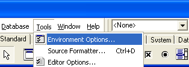
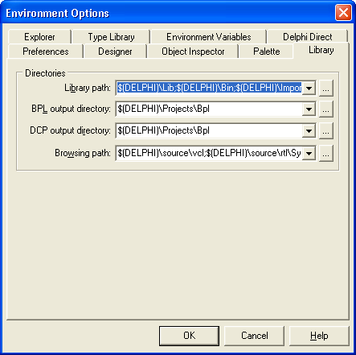
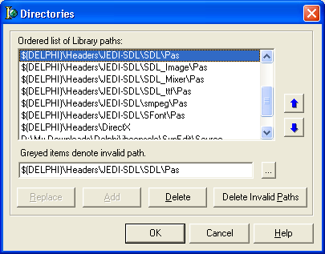

- Extract the JEDI-SDL Zip file or Tar.gz file, to a directory
of your choice, making sure you maintain the archives built in directory
structure. For example I have a "headers" directory under my Delphi or Kylix
installation directory. So for me on a windows machine I have installed
JEDI-SDL to. "D:\Program Files\Borland\Delphi6\Headers\JEDI-SDL\.....". Make
sure you remember this path and also that under Linux, paths are case
sensitive so you may want to keep everything in lower case. The main advantage
of extracting them under your installed Delphi or Kylix directory is so
you can make use of the $(DELPHI) path directive as shown in the next few
steps
- Next we need to make sure we are using the latest Runtimes for
out system. in the ....\JEDI-SDL\Runtimes\ directory you will find the
latest Linux ( in RPM format ) and and Windows ( DLLs ) runtimes.
- Under Linux install each RPM and everything should be ready to
go on to Step 3.
- NOTE : For the DeathTruckTion game to run you must have either
fmod.dll ( under Windows ) or
libfmod-3.5.so ( under Linux ) installed.
Under Linux, make sure you are logged in as root and copy the libfmod-3.5.so
file from the Runtimes/Linux/ directory to your /usr/lib/ directory. You
also need to ensure that the shared library has the correct permissions,
other wise it will not execute correctly. So via a command line, navigate
to the /usr/lib/ directory and enter the following command ( it assumed you
are in /usr/lib/ and logged in as root )...
chmod 755 libfmod-3.5.so.
Now you need to create a symbolic link between libfmod-3.5.so and libfmod.so.
This is done with the
following command ( it assumed you are in /usr/lib/ and logged in as root
)...
ln -s libfmod-3.5.so libfmod.so.
- Similarly, I found that the smpeg RPM did not install smpeg correctly.
In you /usr/lib/ directory you will probably find libsmpeg-0.4.so. This
is fine but the smpeg file now refers to the Linux norm of a generic symbolic
link. So we will have to create one. Via a command line, navigate to the
/usr/lib/ directory and create a symbolic link between libsmpeg-0.4.so
and libsmpeg.so. This is done with the
following command ( it assumed you are in /usr/lib/ and logged in as root
)...
ln -s libsmpeg-0.4.so libsmpeg.so.
- Under Windows, unzip and copy each DLL to your ...\System or
...\System32 directory and everything should be ready to go on to Step
3.
- Now that you have the all the header files, associated demos
and runtimes in their logical places, open up Delphi or Kylix and go to..
- the "Environment Options" menu option, 
- then select the "Library" tab and then click on the ellipses
( the button with 3 dots on it ) that are associated with "Library Path".
- Assuming you have extracted the files to the directory I suggested
above, you can simply add the following entries to the "Directories" dialog...
- $(DELPHI)/Headers/JEDI-SDL/SDL/Pas
- $(DELPHI)/Headers/JEDI-SDL/SDL_Mixer/Pas
- $(DELPHI)/Headers/JEDI-SDL/SDL_Image/Pas
- $(DELPHI)/Headers/JEDI-SDL/SDL_Net/Pas
- $(DELPHI)/Headers/JEDI-SDL/SDL_ttf/Pas
- $(DELPHI)/Headers/JEDI-SDL/smpeg/Pas
- $(DELPHI)/Headers/JEDI-SDL/SFont/Pas
- $(DELPHI)/Headers/JEDI-SDL/SDL_Sound/Pas
- $(DELPHI)/Headers/JEDI-SDL/SDLMonoFonts/Pas
- $(DELPHI)/Headers/JEDI-SDL/SDLSpriteEngine/Pas
After the above changes you should have something that looks similar to
this ( Remember if you are using Linux you should use "/" and not "\" for
you paths. Windows allows you to use both it you like. )...

Once these paths are entered and you have clicked ok for Delphi or Kylix
to store the path information in its registry, you should be ready to start
coding or to start playing with around with the demos.
The
JEDI-SDL team,
hopes your experience is a positive one.